ELECTRICAL AND ELECTRONIC SYSTEM
- Path
- Descriptions > 55 ELECTRICAL EQUIPMENT > 5505 INSTRUMENT/GAUGE ELECTRICAL CIRCUITS > ELECTRICAL AND ELECTRONIC SYSTEM
- Kind
- system description
- Applies to
- all engines; all production periods
- Interactive page
- https://sloeber94.github.io/elrnDB-fUlss/en/#/179006648
Applies to: all engines; all production periods
GENERAL SPECIFICATIONS
In conventional electrical systems, functions are activated with the aid of dedicated point-to-point lines
The increase in the number of electrical/electronic devices on board new cars has given rise to heavier and more complex connections. This is partly due to the complexity of the functions implemented in the burgeoning number of electronic units - which also need to exchange data continually: all this makes new electrical systems more difficult to install and increases the complexity of fault diagnosis.
Many problems have been overcome and new electrical systems have been optimised compared to conventional systems by using a network form of connection. This provides a more effective means of managing communication on the board the car and of transferring data between the various subsystems. Information is distributed via serial pathways (buses) that may take the form of: individual wires, twisted wire pairs or even optical fibres.
Conventional solution
The three control units (electronic nodes) require a number (N) of wires for each input/output data item in order to perform their function. This multiplied the amount of cable required to the point that systems are made more complex (design and manufacture) and more voluminous (weight, bulk, cost). Some 40 kg of wiring looms are required that stretch for more than 2 km - and this figure could double every 10 years because even now a car could be equipped wiht 20 to 40 electronic control units (ECUs).
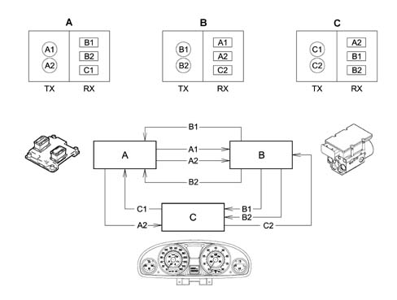
- Tx - information to be transmitted from nodes A (A1,A2) B (B1, B2) C (C1, C2)
- Rx - information to be received from nodes A (B1, B2, C1) B (A1, A2, C2) C (A2, B1, B2)
The first step towards reducing the volume and complexity of wiring looms was to group several electronic functions in a single unit: fewer control units = fewer wires.
Examples of integation
Engine control unit (NCM) manages: injection, ignition, pollution system, engine cooling control etc.
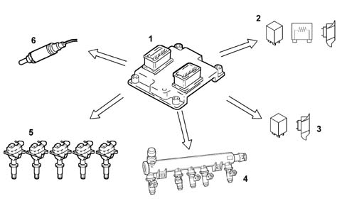
- 1 - Engine management control unit
- 2 - Engine cooling fan, 1st speed
- 3 - Engine cooling fan, 2nd speed
- 4 - Injectors (injection)
- 5 - Coils (ignition)
- 6 - Lambda sensor
Integration of electrical/electronic functions in a single electronic control unit (ECU) has allowed us to improve:
- current uptake management (lower battery wear);
- operation of appliances, because they are managed by a single control unit;
- troubleshootng due to self-diagnostic functions in the control units.
This first stage allowed us to reduce the number of electronic units but not to reduce the volume of wiring to a sufficient extent.
MULTIPLEXING solution
This involves exchanging various data signals between various ECUs on a single transmission channel (a principle already used for phone, radio and TV networks): 1 BUS (2 wires) for all data.
The second stage allowed us to make a decise leap in terms of:
- Reducing and simplifying the wiring
- Reducing the number of sensors (information sharing)
- Allowing ECUs to communicate among themselves.
As more and more systems require interconnection, the MULTIPLEXING solution becomes more and more attractive.
In general terms, in order to transmit data via a multiplexing system we need to define the following with precision:
- transmission channel (wires, optical fibres, radio waves etc.);
- type of signal sent via the channel (voltage, current, light etc.);
- the communication protocol (all the rules that allow management of analogue or digital transmission type, code type, address, transmission order, error detection etc.).
The transmission support or channel on the car is a pair of wires known as a BUS. The system therefore transmits batches (packages of information sent one after another. This is not done in any particular set order but in accordance with the needs of the control unit). The following protocols are used for the voltage signals produced;
- CAN protocol (Controller Area Network): used for the high speed transfer of data (engine management, ABS, automatic transmission) initiated and developed by Rober Bosch as early as 1983,
- VAN protocol: used for managing standard bodywork functions.
Binary
The language of the electronic units is binary - compatible with the electronic circuits (high low) (open closed etc.): to transmit information, data must therefore be handled in accordance with specific codes. Various codes have therefore been developed to meet all requirements.
One of the most common codes is ASCII (American Standard Code for Information Interchange). This alphanumerical code uses coded groups of bits. It is able to represent the 26 letters of the English alphabet plus the ten decimal numbers in addition to punctuation marks and instruction commands. ASCII is an eight bit binary code. Seven bits are used to code information and the eighth is used to check errors. By using seven bits per character, it is posible to code no fewer than 128 information including decimal numbers, upper and lower case letters of the alphabet, punctuation marks etc. Once the number of bits making up a word (i.e. the word length) has been fixed by a data code, this number must not be altered.
A group of eight bits is called a byte and represents 256 values: this number is obtained by testing all possible combinations of (0) and (1) in the eight positions availalbe per byte, for example 00000001, 00001111, 11111111 etc. The number 256 (2 exp. 8) can be used to represent the set of alphabetical characters, punctuation marks, accented or special characters etc. In effect, therefore, a single byte may represent a number, a letter of the alphabet, a punctuation mark or a special character. The byte is used as a unit of measurement in saved data quantities and memory device storage capacity.
As with any unit of measurement, bytes are also defined as multiple amounts:
- 1 kilobyte (kb) = 1024 bytes = 2 exp. 10 (2 < sup > 10 < /sup > )
- 1 megabyte (Mb) = 1024 kb (about one million bytes) = 2 exp. 20 (2 < sup > 20 < /sup > )
- 1 gigabyte (Mb) = 1024 kb (about one billion bytes) = 2 exp. 30 (2 < sup > 30 < /sup > )
- 1 terabyte (Mb) = 1024 Gb (about one trillion bytes) = 2 exp. 40 (2 < sup > 40 < /sup > )
Analogue
"Linear" electronics is the term applied to analogue effects, i.e. effects that are proportional and continuous.
A water tap is an example of an analogue switch. This is because it can used to shut off the water flow completely, turn the flow to maximum and also obtain all the other intermediate positions that occur on the continuum between the closed state and the fully open state. The Tester mobile coil instrument is also analogue: the pointer may indicate the measurement position from zero to full scale deflection, by moving continuously along the entire graduated scale and passing through all the points on its way.
Digital
Digital electronic, on the other hand, denotes progress by discrete quantities in quantifiable steps. A light switch is an example of digital operation because the only possible statuses are well-defined and distinct. In this case there are two: on and off, with no intermediate positions. In practice, a digital gauge (whether it operates using warning lights or numbers) increases in steps. It is not possible to determine, for example, the exact level of a fluid between a stage when one warning light on the level gauge is lit and the next is still turned off.
The sensitivity is therefore one step, i.e. the interval between one warning light and the next. The reading is, however, precise and non-subjective.
It is possible to interpose a series of steps between one warning light and the next containing an equal number of warning lights and so on until the discrete measurement steps can practically be equated with the continuous line of an analogue instrument. The similarity is, however, more apparent than real because each step on the digital guage, however small, determines a well-defined position and represents an unequivocable value. Above all, it is not subject to parallalax or interpolation reading errors. To sum up, the sensitivity of a digital instrument is equivalent to that of an analogue instrument but the reading accuracy is always higher.
OPERATION OF MULTIPLEXING NETWORK
The designer of the multiplex system allocated control functions to the Body Computer.
The additional Body Computer functions allow it to provide information on:
- network activities status;
- operational failure status of individual electronic units (nodes);
- a possible network fault.
The Body Computer Node is given the task of "waking up" the network when the ignition key is turned on.
In the case of a fault in the NBC, the Instrument Panel Node (NQS) is given the task of waking up the network. The NQS cuts in only if it is not woken up by the Body Computer after a certain length of time with the ignition key. This prevents network conflicts.
All the the "Node" electronic units process the various signals from associated sensors for individual management purposes and also to manage other control units.
On latest-generation electrical systems, the number of electronic unit that are interconnected, and thus the number of data packages that need to be handled, is very high. For this reason, one or more (CAN or VAN type) networks are used in these systems. Compared to conventional wiring, these allow more effective information exchange between the various electronic units.
The physical means used for the network (either VAN or CAN) is a twin plaited copper wire cable; where one of the wires is for high voltage and the other low voltage. The BUS signals are differential, i.e. the value allocated to the bits is represented by the difference between voltage levels.
To sum up, the combined use of two wires and differential signals allow data packages to be exchanged between different control units on the network. This is even possible in the presence of electromagnetic interference.
Transmission and exchange of data between the VAN and CAN and the transfer of data between the lower speed network and the high speed network and vice versa takes place in the Body Computer node (gateway function).
The message issued to a network by an electronic unit or node is known as a "raster" (data package). It takes the form of a series of pulses, as mentioned previously (known as bits) that take the value (1) or (0). This denotes the presence of absence of a transmitted signal.
Communication protocol
Circulation or transmission of a message known as a frame or data package on a multiplexing network is possible only if a transmission protocol is adopted. This the set of rules that allows the exchange of data and controls between two or more electronic units (control units or, better still, nodes).
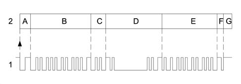
- 1 - Frame
- 2 - Blocks
- A - Identifies the beginning of transmission or start of a new frame (START OF FRAME. SOF) consists of 1 dominant bit and indicates to all other interfaced nodes that they must synchronise with this SOF bit (awake the BUS that may be in stand by).
- B - Identifier (12 bits): marks and identifies the contents of the message. Also contains information on message recipients. Arbitrage of transmitted frames is carried out in this field. This means that the indentifier code allows frame content and priority allocated by the network architect to be uniquely identified.
- C - Control range (4 bits); indicates the nature of the frame or message and makes it possible to indicate whether the frame is a question, a response or data diffusion. At the same time it indicates whether it is necessary for the frame recipient to communicate that the frame has been correctly received.
- D - Data to be trasmitted (may be orders or information to be transmitted): for the VAN it can be between 0 and 28 bytes (1 byte = 8 bits), whilst for the CAN it can be between 0 and 8 bytes.
- E - Control field; allows a check to be run that the data transmitted are unaltered (message validity). The node or nodes that detect the presence of an error first issue a series of dominant warning bits. The transmitting node eliminates the message and emits a new frame after a certain time lapse.
- F- Reception confirmation. This allows all the destination nodes to indicate that the frame has been correctly transmitted. For messages transmitted via the VAN, confirmation of receipt is optional, whilst for frames transmitted via the CAN it is compulsory.
- G - End of frame: determines the end of the message with no ambiguity.
Bus communication rules
The two types of nodes
There are two different types of nodes:
- Master Node: issues frames to send or receive information, receives frames sent directly to its address or diffused over the network without a particular destination;
- Slave Node: receives frames and only issues them if interrogated directly
In the following type of network: Master / Slave, the management of the information is entrusted solely to the Master Node,
In the following type of network: Multi Master, the management of the information is not concentrated at a single Node, but they are all authorized to circulate messages.
In a mixed type of network: different Master Nodes with Slave Nodes, the information is managed by the Master nodes.
Priority management (Superimposition or collision of non-destructive frame)
The system protocol allows superimposition problems to be handled when several nodes need to emit a frame simultaneously.
Each node possesses an identification code that also expresses its priority. In practice, when a node expresses its intention to transmit a frame on the network by means of its initial bit and another node simultaneously carries out the same operation, because both read (as well as transmit) the signals emitted by the network, the node that detects a difference between the emitted signal and the received signal detects that another node is emitting a higher priority frame. The node that transmits the lower priority message immediately interrupts its transmission and makes way for the node that is transmitting a higher priority message. In practice, the high priority message is sent to the network without any interruption or delay. Naturally, the nodes that intended to transmit messages with lower priority must suspend transmission to become receivers and then re-attempt to send the frame when transmission is complete. This non-destructive superimposition is regulated by bit arbitrage. One bit is called the dominant bit and allocated a value of zero (0) while the other bit is known as a recessive bit and its value is equal to one (1).
The higher priority frame gains the right to be transmitted on the BUS. A dominant level (0) always takes precedence over a recessive level (1).
Types of information interchange
Communication between the various nodes can be:
- point to point: sending the data involves a precise destination,
- diffused: the data transmitted does not have a precise destination
- question / response: the answer may be provided directly within the question frame or in a different frame dedicated to the response.
- with the confirmation of receipt: the node that receives the frame completes the actual frame on receipt.
Limitation of interference on CAN network
Representation of network interference.
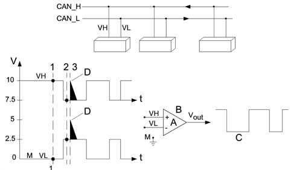
- VH - Voltage signal on channel H
- VH - Voltage signal on channel L
- Vout - Output voltage signal
- A - Amplification coefficient
- B - Operational amplifier
- C - Filtered signal
- D - Noise pulse (interference)
- M - Earth
- Vout = A (VH - VL)
- 1 - VH = 10; VL = 0 Vout = 10-0 = 10V
- 2 - VH = 7.5; VL = 2.5 Vout = 7.5-2.5 = 5V
- 3 - VH = 10; VL = 5 Vout = 10-5 = 5V
- VH-VL = 10V
- Associated value = 1
- VH-VL = 5V
- Associated value = 0
Operational amplifiers are widely used in control units fitted to present-day automotive systems. This plays an important role in amplifying (increasing signal amplitude without altering wave-form) and squaring signals. In this case, it is used as a system that can optimise reactions to transitory interference in the network. The (+) and (-) do not indicate the supply polarity but the two signal inputs. It is possible to use only one signal input or both inputs. If only one input isused, the other is connected to earth. The use of both inputs makes it possible to carry out specific operations such as making a comparison between two signals or working out the sum of or difference between them.
1) VH input voltage in PIN (+) of amplifier operational at instant (1) VH = 10 V
VL input voltage in PIN (-) of amplifier operational at instant (1) VL = 0 V
VH - VL = Vout (10 - 0) = 10 V high output signal
2) VH input voltage in PIN (+) of amplifier operational at instant (2) VH = 7.5 V
VL input voltage in PIN (-) of amplifier operational at instant (2) VL = 2.5 V
VH - VL = Vout (7.5 - 2.5) = 5 V voltage in this case considered 0 low output signal
3) Condition of interference on line (2.5 V)
At instant 3, an interference of +2.5 V intervenes with repercussions on both lines, changing VH = 10 V and VL = 5 V ma
VH - VL = Vout (10 - 5) = 5 V will therefore always be associated with value 0
To conclude, the interference that occurs concomitantly on both CAN network leads will automatically be treated as though it had never existed.
Structure of the network
The physical medium used for automotive networks is double copper electrical cable type, where one wire is associated with a higher voltage level than the other.
In order to transfer and receive information, all electrical/electronic units are connected to the network by means of switching interfaces built into the electronic units that are known as transceivers.
The electronic units in the networks are programmed and operate by means of data and information storage, processing and transmission using a binary convention, i.e. two symbols that denote two basic electrical logic statuses.
- absence of voltage, circuit open or level zero (0)
- presence of voltage; circult closed; or level one (1)
levels (0) and (1) constitute the basic information unit known as a BIT (binary digit)
High transmission speed CAN
The CAN is illustrated below
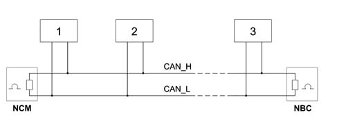
- 1 - Node 1
- 2 - Node 2
- 3 - Node n
The network displays the following characteristics:
- BUS comprising 2 twisted copper wires 0.6 mm² in diametro,
- differential voltage signals on the two lines known as CAN H and CAN L, the electrical signal is transmitted opposite,
- transmission sped of 250 kbit/sec,
- termination resistances at the NBC and NCM nodes (60 O),
- each node is capable of generating a differential voltage of between 1.5 V and 3.5 V measured on a resistance load of 60 Ohms,
- there can be a maximum of 30 nodes.
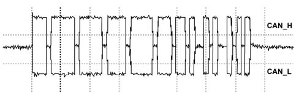
The graph below illustrates the CAN signal details.
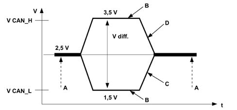
- V - Voltage
- t - Time
- V diff - Differential voltage
- A - Recessive
- B - Dominant
- C - Low CAN signal
- D - High CAN signal
The network interface cannot communicate via the CAN if one of the following situations arises:
- interruption of one of the two lines (H or L),
- short circuit of a line (H or L) at the battery (+),
- short circuit of a line (H or L) to earth (-),
- one of the two NCM or NBC nodes missin.
Low transmission speed VAN
The diagram below illustrates how a VAN signal is seen through an oscilloscope.
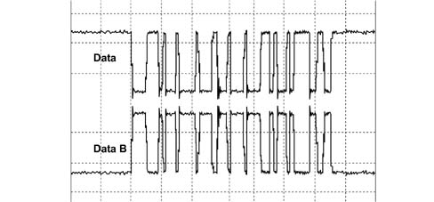
The network displays the following characteristics:
- BUS comprising 2 twisted copper wires 0.6 mm² in diametro,
- differential voltage signals on the two lines known as DATA and DATA B, the electrical signal is transmitted opposite,
- transmission sped of 62.5 kbit/sec,
- no termination resistances,
- there can be a maximum of 16 nodes.
The network interface can communicate via the VAN if one of the following situations arises:
- interruption of one of the two lines (DATA or DATA B),
- short circuit of a line (DATA or DATA B) at the battery (+),
- short circuit of a line (DATA or DATA B) to earth (-).
The NBC is the only node at the VAN lines (Comfort and CAR) with diagnostic lines.
To limit electrical current consumption, the electronic circuitry of the various nodes is no longer supplied one minute after the engine has been switched off and the ignition key extracted from the ignition.
However, several functions can wake the system up again (e.g. opening the doors).
STRUCTURE
The system interacts with all electrical system functions to directly control body functions (visibility, access, on-board information, comfort, communications etc.) and supports information exchange between traction control systems (engine, braking, gearbox etc.).
Power is distributed via the junction units and/or fuse boxes. These are connected to control elements (relays and static actuators) to ensure maximum electrical protection and minimum complexity.
Systems of this type offer innumerable benenfits, for example:
- sensors included in the various subsystems are available to the network;
- information may be shared;
- sensor duplication is eliminated;
- system flexibility is increased;
- new functions may be added simply by changing the software (developments throughout the car's lifetime),
- wiring design is simplified and the number of connectors reduced,
- the operational safety of electronic devices is increased to improve the reliability of information transmitted,
- because a diagnostic function is built-in, service operations on electric/electronic components are easier.
Network architecture
The structure consists of four communication networks which connect nodes belonging to the different areas (vehicle dynamic control and bodywork functions) and a certain number of complementary serial lines used for diagnosis and other specific functions:
- a multi-master type CAN for the dynamic control of the vehicle (high speed),
- a multi-master type VAN known as a COMFORT network which connects the NBC to the information or comfort equipment.
- a master/slave type VAN divided into two sub sectors also known as BODYWORK networks: the VAN CAR1 and the VAN CAR2.
MAIN STRUCTURE DIAGRAM (MAIN NODES)
The table below lists the nodes and their abbreviations.
The following diagram shows the main nodes.
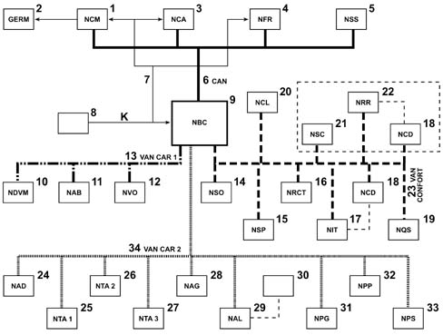
- 1 - Engine Management node (NCM)
- 2 - Engine cooling fan assembly (GERM)
- 3 - Automatic Transmission Node (NCA)
- 4 - Braking System Node (NFR)
- 5 - Steering Sensor Node (NSS)
- 6 - CAN
- 7 - K line
- 8 - EOBD (eletronic on board diagnostic) diagnostic socket
- 9 - Body Computer Node (NBC)
- 10 - Engine Compartment Derivation Node (NDVM)
- 11 - Air Bag Node (NAB)
- 12 - Steering Wheel Node (NVO)
- 13 - VAN CAR 1
- 14 - Milometer Warning lights Node (NSO)
- 15 - Parking Sensor Node (NSP)
- 16 - Telematic Reception Control Node (NRCT)
- 17 - Info Telematic Node (NIT)
- 18 - CD Changer Node (NCD)
- 19 - Instrument Panel Node (NQS)
- 20 - Climate Control Node (NCL)
- 21 - Multifunction Screen Node (NSC)
- 22- Radio Receiver Node (NRR)
- 23 - COMFORT VAN
- 24 - Additive Control Node (NAD)
- 25 - Sun Roof 1 Node (NTA1)
- 26 - Sun Roof 2 Node (NTA2)
- 27 - Sun Roof 3 Node (NTA3)
- 28 - Driving Position Node (NAG)
- 29 - Alarm Node (NAL)
- 30 - Siren
- 31 - Driver's Door Node (NPG)
- 32 - Passenger Door Node (NPP)
- 33 - Sliding Door Node (NPS)
- 34 - VAN CAR 2
CAN Connection
The CAN BUS cables are made out of braided or twisted pairs. This device allows a high level of immunity to electromagnetic interference of external origin.
The following electronic units are connected to the Body Computer (NBC) on the CAN line (high transmission speed):
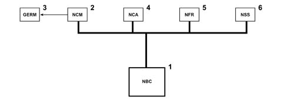
- 1 - Body Computer (NBC)
- 2 - Engine control node (NCM)
- 3 - Engine cooling fan assembly (GERM)
- 4 - Automatic gearbox node (NCA)
- 5 - Braking system node (NFR)
- 6 - Steering angle sensor node (NAS)
NBC input signals:
- Snow selection
- Evaporator sensor
- Luggage compartment contact
- Doors open contact
- Brightness sensor
- Driver's/passenger seat belt
- Alternator
- Rain sensor
- Reverse gear contact
- Parking brakecontact
- Door lock contact
- Rearscreen wiper stop
- Windscreen wiper stop
- Luggage compartment opening
- Door Locking button
- Fuel level gauge
- Evaporator temperature
- Engine oil temperature
- Fuel Cap Sensor
- Hanbrake
- Engine oil level
NBC output signals:
- Climate control compressor
- Luggage compartment warning light
- Front courtesy light
- Rear courtesy lights
- Rear lights
- Front lights
- No. plate lights
- Heated rear windscreen
- Rear side windows
- Rear electric windows
- Rearscreen washer
- Rearscreen wiper
- Rear lock
NCM input signals:
- Linear sensor
- Engine speed
- Clutch safety contact
- Brake safety contact
- Engine coolant temperature
- Accelerator pedal position
- Intake air pressure
- Camshaft 1 position
- Intake air flow rate
- Diesel temperature
- Diesel fuel high pressure sensor
- Catalyzer temperature
- Inertia contact
- FAP differential pressure
- Temperature downstream of FAP
- Detonation sensor 1
- Detonation sensor 2
- Throttle sensor
- Intake air temperature
- Lambda sensors
- Throttle sensor
- Camshaft 2 position
NBMoutput signals:
- EGR
- Injectors
- Injection pump
- Twin relay
- Heater plugs
- Burner (WEBASTO)
- Diesel fuel high pressure regulation
- Turbo pressure regulation
- Ignition coils
- Motorized throttle
- Engine cooling fan assembly management
- Fuel heater
NCA output signals:
- Selector lever position
- Oil temperature
- Output speed
- Input speed
- Impulse control
- Stop contact
- Redundant stop contact
- Turbine speed
- Line pressure
NCA output signals:
- Gear lever lock
- Ignition relay
- Key lock
- Left/right reversing light
NFR input signals:
- Left/right front and left/right rear wheel speed
- Brake fluid level
- Pad wear
- Lateral acceleration gyroscope
- Brake circuit 1 pressure
- Brake circuit 2 pressure
- Steering angle sensor
VAN CAR 1 connection
The electronic units illustrated in the diagram are connected to the Body Computer at the VAN CAR 1.
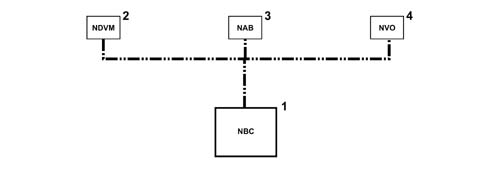
- 1 - Body Computer (NBC)
- 2 - Engine Compartment Derivation Node (NDVM)
- 3 - Air Bag Node (NAB)
- 4 - Steering Wheel Node (NVO)
NSM output signals:
- Main beam headlamp
- Dipped headlamp
- Fog light
- Horn
- Windscreen wiper
- Windscreen washer
- Rearscreen washer
- Headlamp washer
- Climate control system impulse generator
- Air pump
- Fuel pump
- Engine components
NAB input signals:
- Inhibition key
- Left side sensor
- Right side sensor
NAB output signals:
- Driver's side module
- Passenger side module
- Smart driver's side module
- Smart passenger side module
- Right side module
- Right blind module
- Left side module
- Left blind module
- Driver's side pretensioner
- Passenger side pretensioner
Comfort VAN connection
The electronic units illustrated in the diagram are connected to the Body Computer at the COMFORT VAN.
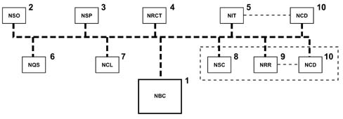
- 1 - Body Computer (NBC)
- 2 - Milometer Warning lights Node (NSO)
- 3 - Parking Sensor Node (NSP)
- 4 - Telematic Reception Control Node (NRCT)
- 5 - Info Telematic Node (NIT)
- 6 - Instrument Panel Node (NQS)
- 7 - Climate Control Node (NCL)
- 8 - Multifunction Screen Node (NSC)
- 9- Radio Receiver Node (NRR)
- 10 - CD Changer Node (NCD)
NSO input signals:
- Light dimmer
- Milometer reset
NSO output signals (warning lights):
- Left/right direction indicator
- Side lights dipped headlamps main beam headlamps
- Fog light/rear fog lamp
- ABS, braking system fault
- Driver's seat belt not fastened
- CDS
- Driver's pre-heating
- Air Bag failure
- Air Bag inhibition
- Battery charge
- STOP
- Oil pressure
- Speed regulation
- EOBD
NSP input signals (Proximity sensors):
- Internal right rear sensor
- External right rear sensor
- Internal left rear sensor
- External left rear sensor
NCRT input signals:
- Function buttons (navigation, telephone, audio
- Menu, Main, Valid, Esc, Mode)
- Headlamp alignment manual adjustment
NIT input signals (telematic+radio-tel-nav):
- Microphone
- GMS radio aerial
- GPS Aerial
- Video input
- CD Changer
- SOS button
NIT output signals (telematic+radio-tel-nav):
- CT and DT display
- Amplifier
- Speakers: Front tweeters, 2 rear tweeters, 2 Ø 165cm front, 2 Ø 165cm rear
- CD Changer
NQS input signals:
- Emergency button
- AC/ON button (RF)
- Heated rear windscreen button (RF)
- ESP button
NQS output signals:
Warning lights:
- Engine coolant temperature
- Minimum fuel level
- Maximum temperature alarm
- Fuel level gauge
Display:
- Vehicle speed
- Engine speed
- Warning LED
- Heated rear windscreen LED (RF)
- Diesel information (RF)
NCL input signals:
- Solar ray sensor
NCL output signals:
- Additional impulse generators (2x50W)
- Main impulse generator (400W)
NRR input signals:
- CD Changer
NRR output signals:
- Speakers
- 2 front tweeters
- 2 rear tweeters
- 2 Ø 165cm front
- 2 Ø 165cm rear
- CD Changer
VAN CAR 2 connection
The electronic units illustrated in the diagram are connected to the Body Computer at the VAN CAR 2.
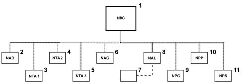
- 1 - Body Computer (NBC)
- 2 - Additive Control Node (NAD)
- 3 - Sun Roof 1 Node (NTA 1)
- 4 - Sun Roof 2 Node (NTA 2)
- 5 - Sun Roof 3 Node (NTA 3)
- 6 - Driving Position Node (NAG)
- 7 - Alarm siren
- 8 - Alarm Node (NAL)
- 9 - Driver's Door Node (NPG)
- 10 - Passenger Door Node (NPP)
- 11 - Sliding Door Node (NPS)
NAD input signals (FAP):
- Differential pressure
- Downstream temperature sensor
- Minimum additive level
- Tank cap
NAD output signals (FAP):
- Additive supercharging pump
- Additive injector
NTA input signals:
- Roof partly closed control
- Sliding control
NAG input signals:
- Seat sensors
- Steering column sensors
- Lengthwise adjustment
- Backrest angle height adjustment
- Lumbar adjustment
- Seat memorizing panel
NAG output signals:
- Seat operating motors:
- raising, retracting, backrest tilting
NAL input signals:
- Volumetric push ejection
- Ultrasound sensors
- Bonnet contact.
NPG input signals:
- Driver's door buttons
- Child locks
- Rear view selector
- Rear view adjustment
- Driver/passenger side electric window control
- Left/right rear electric window control
NPG output signals:
- Left/right A/B rear view mirror
- Rear view mirror heater
- Rear view mirror folding
- Electric windows
NPP input signals:
- Passenger door buttons
- Electric window controls
NPP output signals:
- Left/right A/B rear view mirror
- Rear view mirror heater
- Rear view mirror folding
- Electric windows
NPS input signals:
- Left/right front button
- Left/right rear button
- End of travel contact
- Left/right door opening
- Left/right door lock contact
- Left/right closing sensors
NPS output signals:
- Left/right door opening
- Left/right sliding door motor
- Left/right door closing
E.O.B.D. (Electronic on board diagnostic) connector
All the diagnostic lines flow into the EOBD connector.